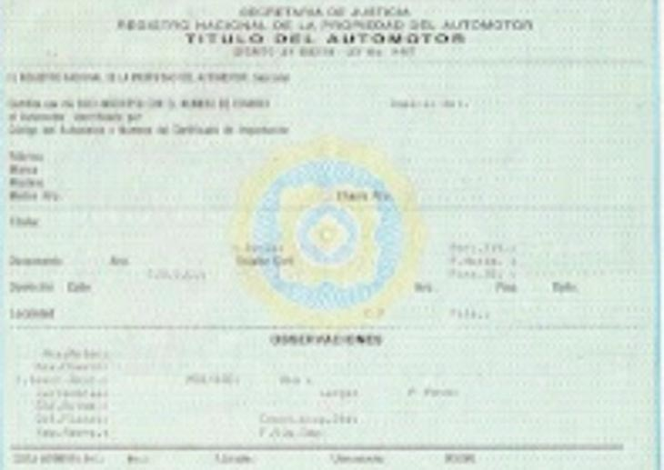

Documentos
Cedula
La Cédula Única de Identificación del Vehículo, más conocida antes como cédula verde o cedula azul, es un identificador en donde figuran el dominio, nombre y documento del titular, marca, modelo, números de chasis y motor.

Titulo automotor
El título del automotor digital es un documento que podés obtener de forma digital y que certifica los datos del vehículo y los del titular. El título digital es un documento que valida los datos del vehículo y los del dueño del mismo. En el vamos a encontrar que tiene: número de dominio,datos vigentes de auto/moto/otro y de su titular, fecha de inscripción, el uso al que se afecta el vehículo, fecha de la última transferencia, el domicilio de su anterior propietario, lugar y fecha de expedición, código y firma electrónica del registro.
